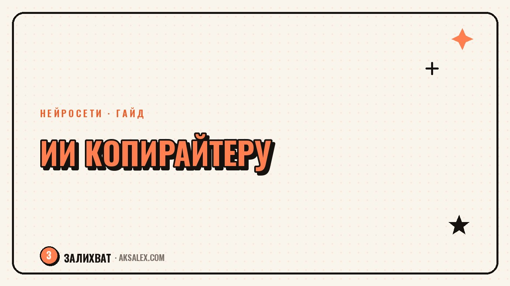

Нейросети для копирайтера: как ускорить тексты

Копирайтер и нейросеть конкурируют за одну и ту же работу - написание текста, поэтому здесь легче всего скатиться либо в отказ от инструмента из принципа, либо в бездумное копирование готового ответа. Правильная позиция где-то между: нейросеть ускоряет черновой этап и рутину вокруг текста, но голос, структура смысла и финальная правка остаются за автором. Разберём, на каких этапах это работает, а на каких портит текст.
Где нейросеть реально экономит время копирайтеру
Самая большая экономия - не в готовом тексте, а в преодолении чистого листа. Вместо того чтобы полчаса смотреть в пустой документ, ты просишь у нейросети черновой вариант по брифу и дальше работаешь уже с материалом: что-то вычёркиваешь, что-то переписываешь, что-то оставляешь как есть.
Вторая зона экономии - варианты. Нейросеть быстро выдаёт пять-семь разных подходов к одному заголовку или абзацу, и из этого набора проще выбрать сильный вариант, чем рожать его в одиночку с нуля. Здесь ты работаешь редактором чужих черновиков, а не автором с чистого листа.
Три этапа работы, где ИИ ускоряет процесс
- Преодоление чистого листа - черновик по брифу вместо пустого документа
- Генерация вариантов заголовка или первого абзаца на выбор
- Сжатие длинного текста в короткую версию для соцсетей или анонса
Как выстроить рабочий процесс с нейросетью по шагам
Порядок действий имеет значение: если начать с готового текста нейросети и просто подправить пару слов, результат читается как текст нейросети с косметикой. Если начать со своей структуры и голоса, а нейросеть подключить точечно, результат получается живым.
Рабочая последовательность
- Сформулируй свою мысль и структуру текста в паре предложений
- Попроси у нейросети несколько вариантов раскрытия каждого пункта
- Возьми из вариантов формулировки и факты, а структуру и переходы напиши сам
- Прочитай текст вслух - места, где спотыкаешься, почти всегда шаблонные обороты нейросети
- Замени шаблонные обороты на свои формулировки и конкретные детали
Я перестала бояться, что нейросеть меня заменит, когда поняла: она хорошо пишет варианты, но не умеет решить, какая мысль вообще важна. Это решение всё равно моё.
Как не превратить текст в шаблон: правки после черновика
У текстов нейросети есть узнаваемый почерк: одинаковые вводные обороты, избыточные усилительные слова, симметричные списки из трёх пунктов там, где хватило бы одного предложения. Читатель это считывает подсознательно, даже если не может назвать причину, и текст ощущается общим, не своим.
Поэтому финальная редактура - обязательный этап, а не опция. Стоит пройтись по тексту отдельным проходом именно на шаблонность: убрать одинаковые связки между абзацами, заменить общие фразы на конкретные детали своего продукта или ситуации, сократить длинные предложения там, где мысль простая.
- Убери повторяющиеся вводные обороты и связки между абзацами
- Замени общие фразы на конкретные цифры, названия и детали
- Сократи предложения, где длина не добавляет смысла
- Проверь факты и цифры отдельно - нейросеть может выдумать источник
Где нейросеть текст скорее портит, чем ускоряет
Тексты, где важен уникальный личный опыт - кейсы, истории, экспертные колонки - нейросеть не может написать за автора по определению: у неё нет этого опыта, только общие формулировки на похожую тему. Если отдать ей такой текст целиком, получится правдоподобная, но пустая имитация без реальных деталей.
Второй проблемный случай - тексты с фактами и цифрами, которые пойдут в публикацию без проверки. Нейросеть может уверенно назвать несуществующее исследование или неверную цифру, и по стилю это не будет отличаться от достоверной информации. Любой факт, которого нет в твоих исходных материалах, нужно проверять отдельно перед публикацией.
Где отдавать нейросети, а где писать самому
| Тип текста | Можно доверить нейросети | Нужно писать самому |
|---|---|---|
| Черновик по готовому брифу | Да, как основа | Финальная редактура и голос |
| Варианты заголовков | Да, для выбора | Финальное решение |
| Сжатие текста для соцсетей | Да, с проверкой | Проверка смысла после сжатия |
| Кейс или личная история | Нет, нет опыта у модели | Полностью автор |
| Текст с цифрами и фактами | Нет без проверки | Проверка каждого факта |
Как встроить нейросеть в свой процесс: план на первую неделю
Не стоит сразу переписывать весь рабочий процесс. Возьми один текущий заказ и попробуй на нём конкретную последовательность: своя структура, черновик от нейросети по пунктам, ручная редактура на шаблонность.
Пошаговый план
- День 1-2: попробуй связку из этой статьи на одном тексте и замерь время
- День 3-4: сравни итоговый текст с тем, что писал бы полностью сам - честно оцени разницу в качестве
- День 5: сформулируй для себя, на каких типах текста связка работает, а на каких нет
- Дальше используй нейросеть точечно, под конкретные этапы, которые окупились
Частые вопросы
Заменит ли нейросеть копирайтера?
Нет, потому что у неё нет личного опыта, за который читатель ценит текст автора. Она ускоряет черновой этап и рутину вокруг текста, но структуру смысла, голос и финальную правку всё равно делает человек.
Как убрать из текста нейросети шаблонные обороты?
Пройтись по тексту отдельным проходом именно на шаблонность: убрать повторяющиеся связки между абзацами, заменить общие фразы на конкретные детали, сократить длинные предложения там, где мысль простая.
Можно ли публиковать текст нейросети без правок?
Не стоит: такой текст обычно читается как общий и безликий, а факты в нём могут быть неточными. Финальная редактура и проверка цифр - обязательный этап перед публикацией.
Какие тексты нейросеть не может написать вместо копирайтера?
Тексты, где важен уникальный личный опыт - кейсы, истории, экспертные колонки. У нейросети нет этого опыта, только общие формулировки на похожую тему, поэтому такой текст получится правдоподобной, но пустой имитацией.
С чего начать копирайтеру, который раньше не пользовался нейросетями?
С одного текущего заказа: сформулировать свою структуру, попросить у нейросети варианты по пунктам, а потом отдельно пройтись редактурой на шаблонность. Сравнить итог с тем, что писал бы полностью сам, и решить, где связка реально помогает.
Раз тема оказалась полезной, вот что почитать следующим. Какие связки нейросетей закрывают реальные задачи маркетолога, а не общие обещания из презентаций.
Читать статью →а не вручную